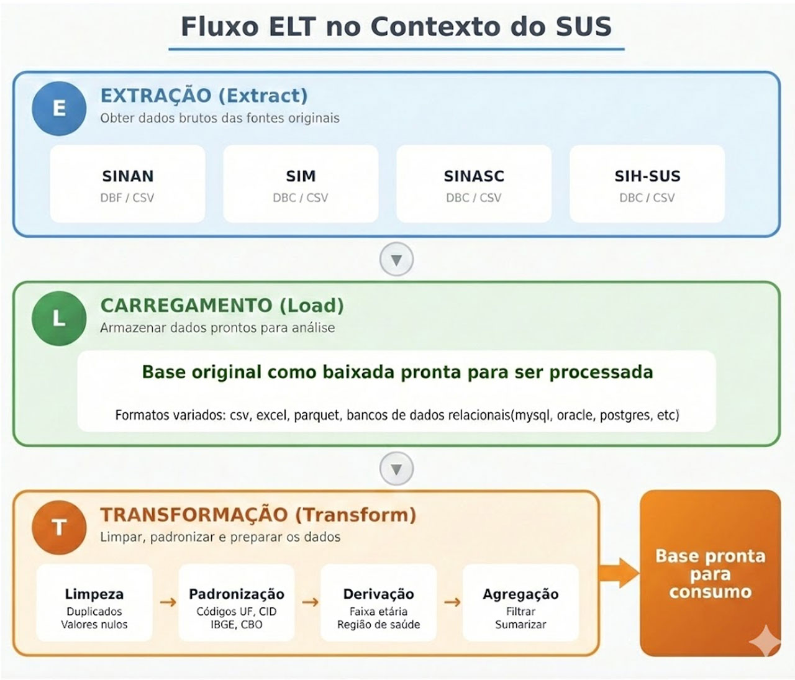

Módulo 1 | Aula 3
ETL (Extract, Load, Transfom)
Tópico 3
Carregamento (Load)
O carregamento é salvar os dados brutos em um formato e local adequados para transformação e consumo.
| Formatos de destino e quando usar cada um | |||
|---|---|---|---|
| Formato | Quando usar | Vantagem | Limitação |
| CSV | Compartilhar com quem usa Excel. | Universal. | Arquivo grande, perde tipos das variáveis. |
| PARQUET | Análises em R/Python, dados grandes. | Rápido, compacto. | Requer que a ferramenta tenha suporte ao formato Parquet. |
| EXCEL | Relatórios para gestores. | Familiar. | Limite de 1 milhão de linhas. |
| BANCO DE DADOS | Acesso por múltiplos usuários. | Consultas SQL. | Requer infraestrutura. |
Boas práticas no carregamento:
- Documentar os arquivos iniciais e posteriormente as transformações realiza-das (criar um "dicionário" do que foi feito).
- Manter arquivo original intacto (nunca sobrescrever).
- Nomear arquivos com data de processamento (ex.: srag_limpo_2024_01_15.parquet).
- Organizar os dados em pastas por etapa (brutos/, processados/, analises/).

Exemplo de aplicação
Cenário: você é analista de dados na Vigilância Epidemiológica estadual e precisa gerar um boletim semanal de SRAG.
| Seu Fluxo ELT | ||
|---|---|---|
| Etapa | O que fazer | Ferramenta |
| E | Baixar arquivo semanal do OpenDataSUS. | R (download.file) |
| L | Salvar os dados no formato original. | |
| T | Filtrar casos do seu estado. | sparklyr (filter) |
| T | Remover duplicatas por ID. | sparklyr (distinct) |
| T | Calcular faixa etária. | sparklyr (mutate) |
| T | Agregar por semana epidemiológica e município. | sparklyr (group_by + summarise) |
| L | Salvar base processada em Parquet. | sparklyr (spark_write_parquet) |
| L | Exportar tabela resumo para Excel. | writexl |